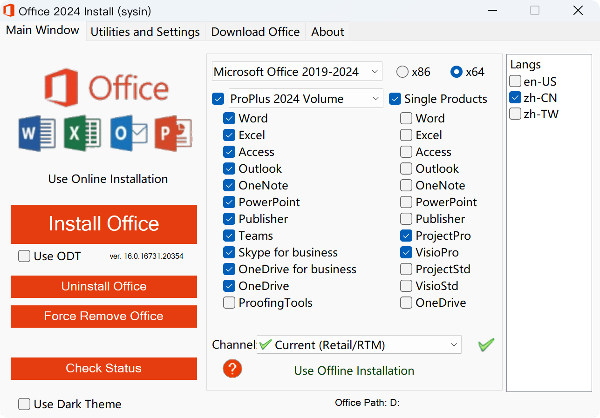

请访问原文链接：Microsoft Office 2024 VL 16.0.17932.20910 中英文版 ISO 下载 (2026 年 8 月更新) 查看最新版。原创作品，转载请保留出处。
生活本不易，原创更不易。还请友商高抬贵手，尊重彼此的劳动成果。谢谢🙏
作者主页：sysin.org
2024 年 9 月 16 日，Office LTSC 2024 正式版已推出！
Microsoft 365 提供云支持的应用程序、安全性和存储，全世界的客户都依赖这些应用程序、安全性和存储来在互联世界中实现更多目标，并为利用生成式 AI 走得更远奠定了安全的基础。投资微软的云生产力解决方案及其支持的人工智能驱动的创新将继续成为微软的首要任务。
尽管如此，微软知道某些客户场景需要不同的方法。有些设备绝对不能连接到互联网；其他的则需要多年保持不变。微软仍然致力于支持微软的客户和这些场景。今年早些时候，微软提供了 Microsoft Office 长期服务渠道 (LTSC) 2024 的公开预览版。今天，微软宣布面向商业和政府客户全面推出下一个永久版本的 Office。
满足特殊需求的更新解决方案
Office LTSC 2024 提供了熟悉的生产力工具的锁定版本，并更新了 Microsoft 365 企业应用版过去三年中添加的部分功能。此版本的新功能包括动态图表和 Excel 中的十多个新文本和数组函数、Outlook 中增强的搜索和会议创建选项 (sysin)，以及性能、安全性和可访问性的改进。了解更多新动态。
Office LTSC 2024 将根据 固定生命周期策略 获得五年支持，并且与之前的版本一样，将可以使用一组通用工具与 Microsoft 365 应用程序一起部署，以使客户能够更轻松地管理混合环境。了解有关如何部署和管理 Office LTSC 的更多信息，请参阅 Office LTSC 2024 概述。
为您的组织选择最佳的生产力套件
虽然 Office LTSC 2024 比之前的 Office LTSC 版本提供了许多重大改进，但作为本地产品，它不包含 Microsoft 365 应用的基于云的功能，例如实时协作、AI 驱动的自动化或云支持安全和合规能力 (sysin)。对于需要额外的部署和连接灵活性（但不需要完全断开连接的解决方案）的客户，Microsoft 365 提供了可以提供帮助的选项。例如，基于设备的许可 可以简化在计算机实验室或医院等许多用户共享设备的环境中对 Microsoft 365 应用的管理。扩展 的离线访问 可用于在需要与互联网断开连接的设备上保持对 Microsoft 365 应用的访问一次长达六个月。订阅 Microsoft 365 Copilot 还需要 Microsoft 365（或 Office 365）；作为断开连接的产品，Office LTSC 不符合资格。
| Microsoft 365 应用程序 [1] | Office LTSC 2024 | |
|---|---|---|
| 包含应用程序 | Word、Excel、PowerPoint、Outlook、OneNote、OneDrive、Microsoft Access（仅限 Windows）、Microsoft Publisher（仅限 Windows） [2] 、Sway、微软表单 | Word、Excel、PowerPoint、Outlook、OneDrive、OneNote、Microsoft Access（仅限 Windows） [3] |
| 桌面应用程序 | ✅ 最多可在 5 台 PC 或 Mac 上安装高级应用程序 | ✅ 安装在 1 台 PC 或 Mac 上的经典应用 |
| 移动应用程序 | ✅ 在最多 5 部手机 + 5 部平板电脑上创建和编辑 | ❌ |
| 网络应用程序 | ✅ 在线创建和编辑 | ❌ |
| 有资格使用 Microsoft 365 Copilot 附加组件 [4] | ✅ | ❌ |
| 云存储 | ✅ 每个用户 1 TB | ❌ |
| 功能更新 | ✅ 提供的新功能和安全更新 通过当前、每月或半年渠道 | ❌ 仅安全更新 |
| 共享设备 | ✅ 共享计算机激活 或 基于设备的许可 提供共享 | ✅ 仅基于设备的许可 |
| 连接要求 | 激活、许可证验证和基于互联网的功能需要互联网连接。延长离线访问时间，使设备一次可以保持长达六个月的离线状态。 | 无需互联网连接 |
拥抱工作的未来
Microsoft 365 为大多数组织提供最安全、最高效且最具成本效益的解决方案，并使客户能够通过 Microsoft 365 Copilot 释放 AI 的变革力量。特别是当微软 即将于 2025 年 10 月 14 日结束对 Office 2016 和 Office 2019 的支持 时，微软鼓励仍在使用这些解决方案的客户过渡到适合 小型企业 或 大型组织 需求的 Microsoft 365 订阅。对于无法做到这一点的场景（需要断开连接、锁定时间的解决方案），这个新版本反映了微软对支持这一需求的承诺。
了解更多
Office LTSC 2024 以及 Project 和 Visio 的新本地版本现已可供现有商业和政府批量许可客户使用。这些产品将于 10 月 1 日向所有客户全面发售。微软将在未来几周内为消费者分享有关 Office 2024 的更多信息 (sysin)。有关 Office LTSC 2024 及其与 Microsoft 365 企业应用版的比较的更多信息，请访问 Office LTSC 计划比较页面。如果您的组织已准备好向 AI 驱动的未来迈出下一步，请立即了解如何开始使用 Microsoft 365。
备注：
[1] 适用于 Microsoft 365 企业应用和 Microsoft 365 商业应用。所有包含桌面应用程序的 Microsoft 365 和 Office 365 套件还包含此处列出的所有内容以及更多内容。了解可用的选项。
[2] Microsoft Publisher 将于 2026 年 10 月退市。
[3] Microsoft Access 仅包含在 Office LTSC Professional Plus 中。
[4] Microsoft 365 Copilot 可能不适用于所有市场和语言。
Office LTSC 2024 概述
Office LTSC 2024 是最新版本的 Microsoft 生产力软件，通过批量许可协议提供给组织。
Office LTSC 2024 独立于 Office 计划或 Microsoft 365 版本，即本地永久许可版本。
这些 Office 产品使用即点即用，而不是使用 Windows 安装程序 (MSI) 作为安装技术 (sysin)。但是，激活这些 Office 产品的方式仍然相同，例如，通过使用密钥管理服务 (KMS)。
Office LTSC 2024 在运行 Windows 10 或 Windows 11 的设备上受支持。有关详细信息，请参阅 Microsoft 365和 Office 的系统要求。

LTSC 2024 Office 哪些新功能？
详见：Office 2024 和 Office LTSC 2024 中的新增功能
支持的操作系统
可以在以下操作系统上安装 Office LTSC 2024：
- Windows 11
- Windows Server 2025
- 基于 ARM 的设备的最低 Windows 11
- Windows 10 LTSC 2021
- Windows 10 LTSC 2019
- Windows 10
- Windows Server 2022
下载地址
本文仅提供安装介质的获取方式。评估版可免费试用 30 天，仅供测试、学习和研究用途，请勿用于生产环境。
Volume licensed versions of Office LTSC 2024
Office LTSC 2024 Pro Plus + Project Pro 2024 + Visio Pro 2024 VL Windows x64
- 百度网盘链接：https://pan.baidu.com/s/1n7mvASByWRzW0HqjIEJUAg?pwd=8biq
- 包含简体中文、繁体中文和英文版（默认勾选 zh-CN）
- Volume licensed：Aug 12, 2026 - Version 2408 (Build 17932.20910)

零售版 Retail：
Office 2024 Pro Plus、Home + Project Pro/STD 2024 + Visio Pro/STD 2024 官方简体中文零售版 v16.0.17928.20148
Office 2024 Pro Plus、Home + Project Pro/STD 2024 + Visio Pro/STD 2024 官方繁体中文零售版 v16.0.17928.20148
Office 2024 Pro Plus、Home + Project Pro/STD 2024 + Visio Pro/STD 2024 Official English Version v16.0.17928.20148
上一个版本：Microsoft Office 2021 VL 16.0.14334.20848 中英文版 ISO 下载 (2026 年 8 月更新)
其他版本：
- 使用 Office 部署工具 构建自定义映像。
相关产品：Microsoft Office LTSC 2024 for Mac 16.112 - 文档、电子表格、演示文稿和电子邮件
更多：Windows 下载汇总

文章用于推荐和分享优秀的软件产品及其相关技术，所有软件提供免费版或试用版。内容若侵犯了您的版权，请联系作者删除。如果您喜欢这篇文章，或者觉得它对您有所帮助，亦或发现有不当之处；欢迎发表评论，也欢迎分享这个网站，或者赞赏一下，谢谢！提示：捐赠或赞赏属于自愿赠予行为，提交后即表示您对作者的支持与认可。为避免误操作，请在确认前仔细检查金额，支付完成后将无法撤销或退还。
 支付宝赞赏
支付宝赞赏  微信赞赏
微信赞赏赞赏一下
敬请注册！点击 “登录” - “用户注册”（已知不支持 21.cn/189.cn 邮箱）。 请勿使用联合登录（已关闭）。